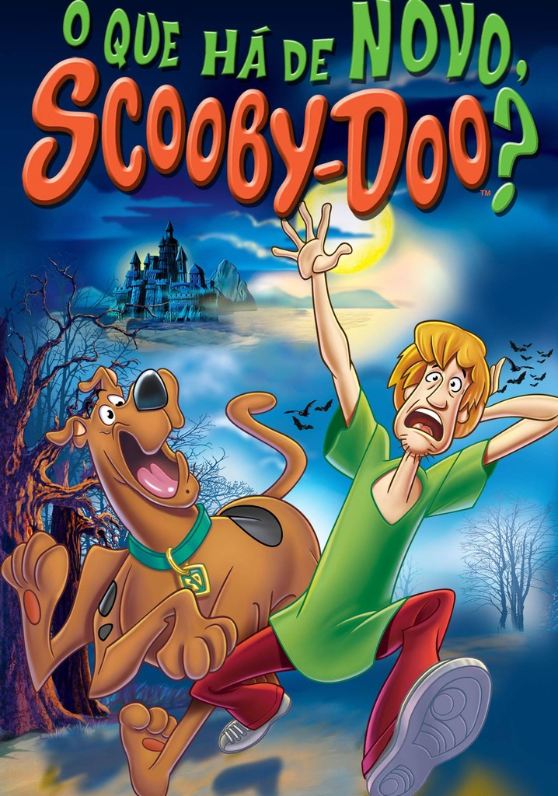
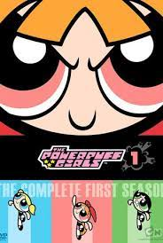
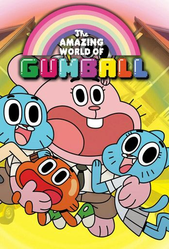
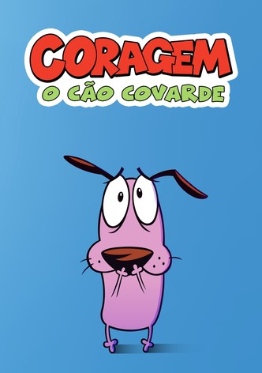
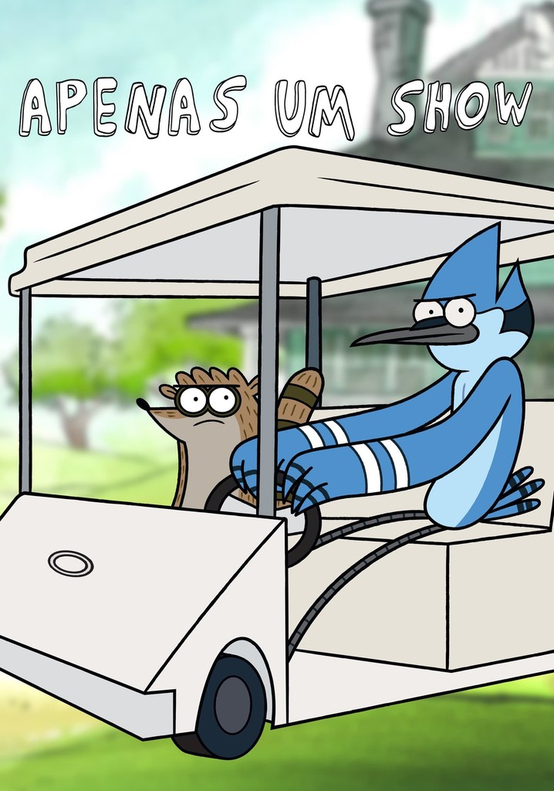
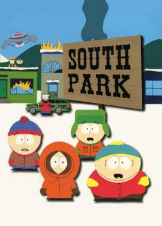
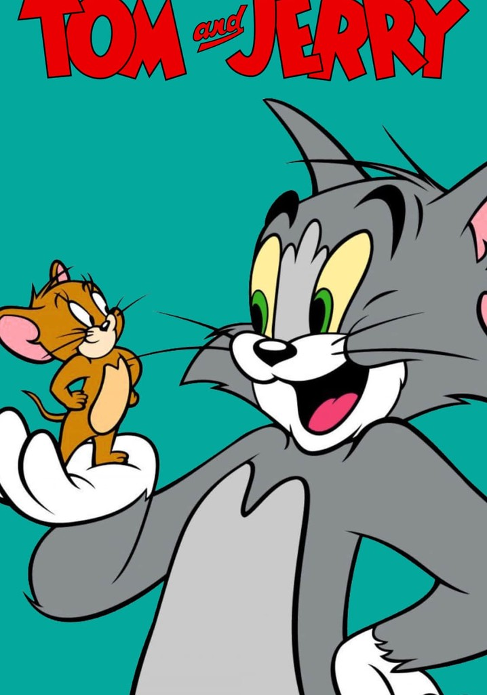

A série segue as aventuras de Finn, o Humano e o seu melhor amigo e irmão adotivo Jake, o Cão; que se aventuram na Terra de Ooo, num futuro pós-apocalíptico por volta de mil anos após a "Grande Guerra dos Cogumelos", sendo Finn presumidamente o último humano existente. Finn foi abandonado pelos seus pais numa floresta até que o casal de cães Joshua e Margaret (pais biológicos de Jake) o adotaram.[6] Jake e Finn são aventureiros profissionais, frequentemente desbravando masmorras ou resgatando as várias princesas da Terra de Ooo. A Princesa Jujuba, a soberana do Reino Doce, da qual Finn é o paladino jurado, com a missão de proteger a ela e ao reino de quaisquer ameaças. O Rei Gelado, um mago com poderes de gelo que governa o Reino Gelado, é por vezes o principal antagonista da série. O Rei Gelado é o alter ego louco de Simon Petrikov, um historiador de antes da Guerra dos Cogumelos. Numa de suas expedições, Simon encontrou uma coroa mágica com um pescador do norte da Escandinávia. Usando-a, Simon obteve os poderes da neve e do gelo, além de imortalidade. No entanto, a coroa sugou a sua sanidade e perda de memória permanente, causando o afastamento da sua amada noiva "princesa" Betty. O Rei Gelado possui, então, uma grande obsessão com as princesas dos diversos reinos, capturando-as até que, geralmente, Finn e Jake as salvem. A outra personagem principal é Marceline, a Rainha dos Vampiros, uma vampira roqueira meio-demônia de mil anos de idade, cujo nasceu em meio a guerra dos cogumelos, desde então vaga pela Terra de OOO se aventurando, muitas vezes com Finn e Jake, seus principais amigos. Ao longo a série é revelado um pouco mais sobre a Grande Guerra dos Cogumelos, também é revelado quem são os pais biológicos do Finn e que ele não é único humano que restou no mundo. Também é revelado como Marceline ganhou os poderes dela. A série tem um estilo evolutivo, ou seja, um episódio afeta os outros, o que faz com que fique muito mais interessante, ela também esconde muitos mistérios que só são possíveis entender mais de 10 episódios depois.
A série mostra a turma do Scooby-Doo ainda com suas habilidades de resolver mistérios, agora eles resolvem mistérios mundo afora utilizando tecnologia de ponta e viajam em diversos países e diversos lugares como um Parque de diversões, praias, pólo sul, acampamentos e muitos.
O show gira em torno das aventuras de três meninas com idade pré-escolar com uma variedade de super-poderes: Florzinha (rosa), Lindinha (azul) e Docinho (verde). O enredo de um episódio geralmente é baseado na humorística dos shows padrões de super-heróis e tokusatsu, com as meninas usando seus poderes para defender sua cidade de vilões e monstros gigantes. Além disso, as meninas têm que lidar com os problemas normais que as crianças enfrentam, como rivalidades entre irmãos, dentes de leite,[5] higiene pessoal,[6] ir à escola, fazer xixi na cama,[7] ou dependência de um cobertor da sorte.[8] Os episódios geralmente contêm referências ocultas à cultura pop mais antiga (especialmente perceptível no episódio "Conhecendo os Beat-Alls",[9] que é uma homenagem aos Beatles). O desenho sempre tenta manter idéias diferentes dentro de cada episódio, com algumas pequenas homenagens e paródias. O show se passa principalmente na cidade de Townsville, EUA. Townsville é descrita como uma grande cidade americana, com uma paisagem urbana composta por vários arranha-céus. Em sua crítica ao filme As Meninas Superpoderosas, o crítico de cinema Bob Longino, do The Atlanta Journal-Constitution , disse que "os desenhos intrincados emanam um toque futurista da década de 1950 como um cenário de David Hockney", e que o programa é "uma das poucas criações americanas que alegra cultura pop e tem uma requintada alta arte".[11]

Timmy Turner é um garoto de 10 anos que vive na cidade de Dimmsdale. É maltratado pela sua babá, Vicky, e quando tenta contar para seus pais, eles não acreditam. Mas um dia o garoto recebe a visita de duas fadas chamadas Cosmo e Wanda, que realizam qualquer desejo, exceto os que violam o livro de regras. Cosmo é atrapalhado e palhaço, enquanto Wanda sempre avisa quando algo pode dar errado. Com o tempo Timmy faz diferentes amigos, tanto na terra como no mundo das fadas. Mais tarde ele recebe seu irmão-fada, Poof que é o único bebê do mundo das fadas. Ao longo da série, Timmy faz vários inimigos, como por exemplo, o Professor Crocker, que é obcecado por fadas e sempre tenta provar a existência delas para o mundo, mas Timmy pode perder seus padrinhos desse modo. Outro vilão notável é Francis, um valentão que adora bater em garotos da idade de Timmy, e outros, como Laser Negro, um vilão do mal que vive na Bola da morte, e que está sempre tentando destruir a Terra. Outro vilão, diferente dos outros, é Remy Granabeça, um menino da idade de Timmy, que também tem uma fada, e sempre tenta fazer Timmy perder seus padrinhos.
“O Incrível Mundo de Gumball” incorpora uma ampla gama de técnicas de animação, como combinar personagens animados em CGI com cenários reais, usar marionetes e até mesmo inserir sequências de animação de recortes e stop motion. A animação apresenta um humor de sacadas, gags, piadas sarcásticas e referências à cultura popular. O desenho foca nas peripécias e confusões de Gumball e seu irmão adotivo Darwin, um peixe dourado de 10 anos.
Coragem é um cachorro assustado que vive com seus donos, a doce Muriel e o rabugento Eustácio, em uma fazenda estranha chamada Lugar Nenhum. Nesse local, ocorrem fenômenos estranhos e inexplicáveis, envolvendo extraterrestres, criaturas monstruosas e eventos sobrenaturais. Apesar de sua própria apreensão, Coragem age como protetor silencioso de sua família, mantendo-os seguros dessas ameaças sem que os idosos percebam. Essa renomada animação combina habilmente elementos de comédia e horror.
O humor de “Apenas um Show” é caracterizado por sua irreverência e referências à cultura pop dos anos 80 e 90. A animação apresenta um apelo retrô e nostálgico, influenciada por desenhos animados, músicas, filmes e jogos de videogame clássicos e antigos. Os protagonistas, Mordecai e Rigby, são dois amigos preguiçosos que trabalham como zeladores em um parque. A história gira em torno de suas travessuras diárias enquanto tentam evitar o trabalho e buscar diversão. Suas tentativas frequentemente os levam a situações bizarras e perigosas.
Com um senso de humor afiado, piadas inteligentes, referências culturais bem empregadas, “As Terríveis Aventuras de Billy e Mandy” é uma das animações mais influentes dos últimos anos. Quando o excessivamente idiota Billy e cinica e obscura Mandy trapaceiam em uma partida de limbo contra o ceifador Puro Osso, este ultimo é escravizado em uma amizade permanentemente indesejada com as crianças. Os elementos soturnos e de terror são um dos principais destaques do desenho.
Criada para o canal Comedy Central, “South Pak” é uma sitcom americana destinada ao público adulto, mas vista por pessoas das mais variadas idades. Conhecido por ter um humor satírico, surreal e por vezes cruel, esse desenho mostra uma narrativa centrada nas aventuras bizarras de 4 crianças Stan Marsh, Kyle Broflovski, Eric Cartman, e Kenny McCormick- na cidade que dá o título ao desenho
Mais uma famosa série do estúdio Hanna-Barbera, as perseguições frustradas do gato Tom ao ratinho Jerry tiveram início em 1940, e até hoje são produzidos episódios especiais e novos dessa série. O desenho começou a ser transmitido no Brasil pelo SBT, na década de 80.